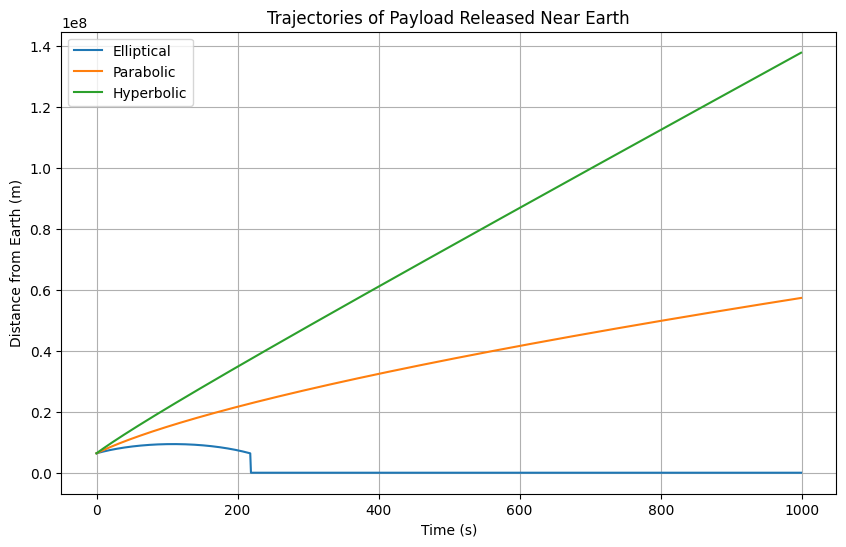
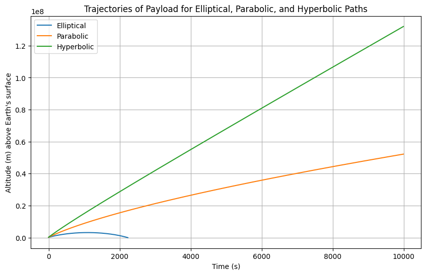

Problem 3
Analysis of Possible Trajectories for a Payload Released Near Earth
When a payload is released near Earth, its trajectory depends on several factors, including its initial velocity, the angle of release, and the gravitational influence of Earth. The most common types of trajectories are elliptical, parabolic, and hyperbolic. These are determined by the object's velocity relative to Earth and the gravitational force acting on it.
1. Gravitational Force and Energy Considerations
The gravitational force \(\vec{F}\) acting on an object near Earth is given by Newton’s law of gravitation:
Where:
- \(G\) is the gravitational constant \((6.674 \times 10^{-11} \ \text{Nm}^2/\text{kg}^2)\)
- \(M\) is the mass of the Earth \((5.972 \times 10^{24} \ \text{kg})\)
- \(m\) is the mass of the object
- \(r\) is the distance from the center of Earth
The specific mechanical energy \(\epsilon\) of the object is:
Where \(v\) is the object's speed and \(r\) is its distance from Earth's center.
2. Elliptical Trajectory
Occurs when \(\epsilon < 0\). The object is in a bound orbit.
Conditions:
Orbital parameters:
- Semi-major axis \(a\)
- Eccentricity \(e\)
Relation between energy and semi-major axis:
3. Parabolic Trajectory
Occurs when the object’s velocity equals the escape velocity, and \(\epsilon = 0\).
Condition:
This is an unbound open trajectory, but with the minimum energy required to escape.
4. Hyperbolic Trajectory
Occurs when the object’s speed is greater than escape velocity, hence \(\epsilon > 0\).
Condition:
5. Graphical Representation of Trajectories
We can simulate different paths (elliptical, parabolic, hyperbolic) based on varying initial velocities.
Python Code for Trajectory Simulation:

Numerical Analysis of the Payload Path
We perform numerical simulation using Euler’s method.
1. Equations of Motion
Acceleration:
Velocity update:
Position update:
2. Initial Conditions
- \(\vec{r}_0 = (R_{\text{Earth}} + h, 0)\), where \(h\) is initial altitude (e.g., 100 km)
- \(\vec{v}_0 = (0, v)\), where \(v\) is initial velocity (e.g., 8000 m/s)
3. Numerical Integration
Python Code for Numerical Analysis:

Trajectories and Their Relation to Mission Scenarios
1. Orbital Insertion (Elliptical / Circular)
-
Elliptical when \(\epsilon < 0\)
-
Orbital velocity for circular orbit:
$$ v = \sqrt{\frac{GM}{r}} $$
- Orbital period (Kepler’s 3rd Law):
$$ T^2 = \frac{4\pi^2 a^3}{GM} $$
2. Reentry (Suborbital Trajectory)
- Trajectory with negative energy but insufficient to stay in orbit.
- Often parabolic-like.
-
Involves:
-
High heat generation
- Aerodynamic deceleration
- Heat shield requirement
3. Escape Scenarios (Hyperbolic)
- \(v > \sqrt{\frac{2GM}{r}}\)
- \(\epsilon > 0\), unbound
- Object leaves Earth permanently
4. Visualization of Different Cases
Python Code for Visualization:

Computational Tool for Simulation
We simulate motion in 2D with Euler’s method.
1. Update Equations (2D)
2. Required Inputs
- Initial position \((x_0, y_0)\)
- Initial velocity \((v_{x0}, v_{y0})\)
- Time step \(\Delta t\)
3. Simulation & Visualization
Gravitational acceleration affects both components, with motion calculated over many steps.
Python Code for Simulating and Visualizing: